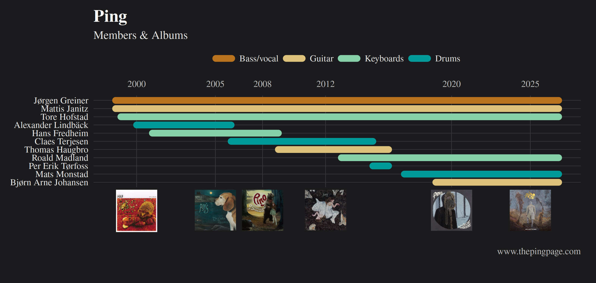

Building a band timeline with ggplot2
This tutorial shows how to build a Gantt-style band timeline in ggplot2. The plot combines thick rounded segments for band membership, a custom dark theme, and album covers placed on the x-axis using ggtext::element_markdown().
The main ideas are:
- use one row per member period;
- plot membership as horizontal segments;
- style the figure with a custom theme;
- use HTML image labels for album covers on the axis.
Sys.Date() returns today’s date when the R code is run. Here it is used as the end date for current band members, so the timeline can be updated automatically when the figure is regenerated.
Finished figure

Code
The example uses album covers in an images/album-covers folder. These are available in the website repository.
library(data.table)
library(ggplot2)
library(ggtext)
library(grid)
band <- data.table(
member = c(
"Jørgen Greiner", "Mattis Janitz", "Tore Hofstad",
"Alexander Lindbäck", "Hans Fredheim", "Claes Terjesen",
"Thomas Haugbro", "Roald Madland", "Per Erik Tørfoss",
"Mats Monstad", "Bjørn Arne Johansen"
),
instrument = c(
"Bass/vocal", "Guitar", "Keyboards",
"Drums", "Keyboards", "Drums",
"Guitar", "Keyboards", "Drums",
"Drums", "Guitar"
),
start = as.Date(c(
"1998-09-01", "1998-09-01", "1999-01-01",
"2000-01-01", "2001-01-01", "2006-01-01",
"2009-01-01", "2013-01-01", "2015-01-01",
"2017-01-01", "2019-01-01"
)),
end = as.Date(c(
"2022-01-01", "2022-01-01", "2022-01-01",
"2006-01-01", "2009-01-01", "2015-01-01",
"2016-01-01", "2022-01-01", "2016-01-01",
"2022-01-01", "2022-01-01"
))
)
current_members <- c(
"Jørgen Greiner", "Mattis Janitz", "Tore Hofstad",
"Roald Madland", "Mats Monstad", "Bjørn Arne Johansen"
)
current_end <- Sys.Date()
band[member %in% current_members, end := current_end]
band[, member := factor(member, levels = rev(member))]
band[, instrument := factor(
instrument,
levels = c("Bass/vocal", "Guitar", "Keyboards", "Drums")
)]
album_breaks <- as.Date(c(
"2000-01-01", "2005-01-01", "2008-01-01",
"2012-01-01", "2020-01-01", "2025-01-01"
))
album_files <- file.path(
"images",
"album-covers",
c(
"its_a_picnic.jpg",
"the_castle_massacre.jpg",
"discotheque.jpg",
"Hurricane.jpg",
"ZigZag.jpg",
"PING_Songs_From_The_Nebula.jpg"
)
)
stopifnot(all(file.exists(album_files)))
album_labels <- sprintf(
"<img src='%s' width='65' /><br>",
normalizePath(
album_files,
winslash = "/",
mustWork = TRUE
)
)
cols <- c(
"Bass/vocal" = "#b9721d",
"Guitar" = "#dcc27a",
"Keyboards" = "#86d0aa",
"Drums" = "#009a99"
)
ping_dark_theme <- function(base_size = 18, base_family = "serif") {
theme_minimal(base_size = base_size, base_family = base_family) +
theme(
plot.background = element_rect(fill = "#1b1b1d", colour = NA),
panel.background = element_rect(fill = "#1b1b1d", colour = NA),
panel.grid.major.x = element_line(colour = "#35353a", linewidth = 0.5),
panel.grid.major.y = element_line(colour = "#313138", linewidth = 0.5),
panel.grid.minor = element_blank(),
axis.title = element_blank(),
axis.text.y = element_text(colour = "grey92"),
axis.text.x.bottom = ggtext::element_markdown(
colour = "grey92",
margin = margin(t = 4)
),
axis.text.x.top = element_text(
colour = "grey75",
margin = margin(b = 10)
),
axis.ticks = element_blank(),
plot.title = element_text(colour = "white", face = "bold", size = rel(1.5)),
plot.subtitle = element_text(colour = "grey90"),
plot.caption = element_text(colour = "grey75", hjust = 1),
legend.position = "top",
legend.justification = "center",
legend.background = element_rect(fill = "#1b1b1d", colour = NA),
legend.key = element_rect(fill = "#1b1b1d", colour = NA),
legend.text = element_text(colour = "grey90"),
legend.title = element_blank(),
legend.key.width = unit(1.1, "cm"),
plot.margin = margin(16, 24, 42, 16)
)
}
p <- ggplot(
band,
aes(
x = start, xend = end,
y = member, yend = member,
colour = instrument
)
) +
geom_segment(linewidth = 5, lineend = "round") +
labs(
title = "Ping",
subtitle = "Members & Albums",
caption = "www.thepingpage.com"
) +
scale_colour_manual(values = cols) +
scale_x_date(
breaks = album_breaks,
labels = album_labels,
sec.axis = sec_axis(
~ .,
breaks = album_breaks,
labels = format(album_breaks, "%Y")
)
) +
coord_cartesian(
xlim = c(as.Date("1998-09-01"), current_end),
clip = "off"
) +
ping_dark_theme()
pNotes
This palette was chosen to fit the figure. It is reasonably accessible, but not a formally colourblind-safe palette. For general categorical plots, a palette designed specifically for accessibility is often a better choice.